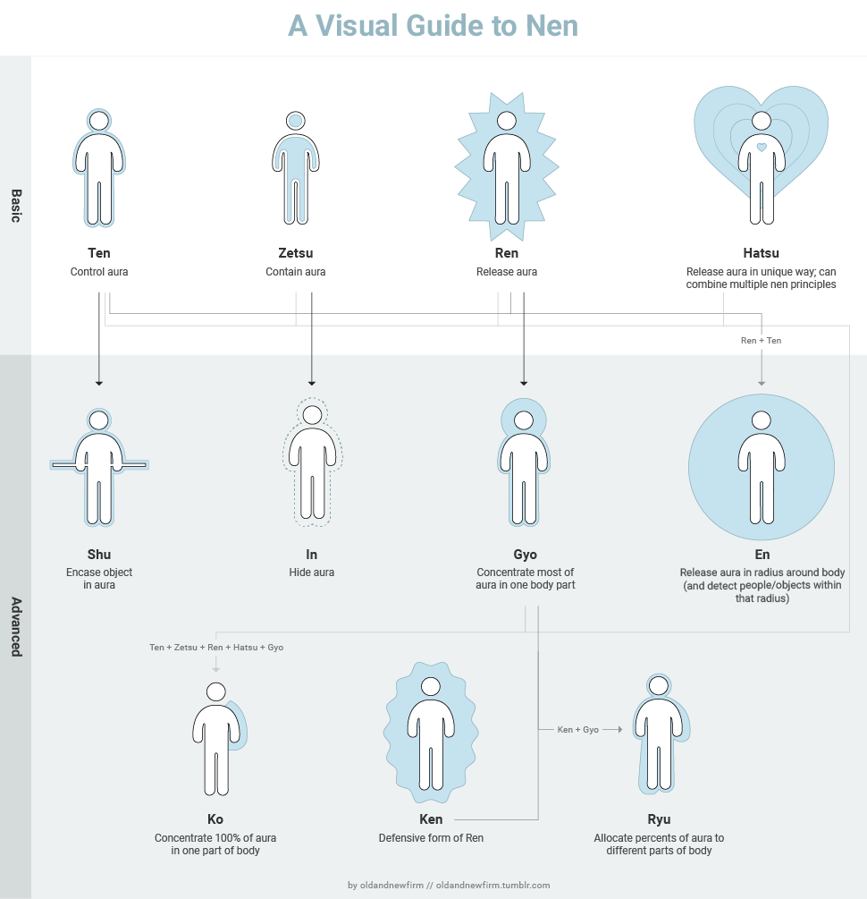

Il y a aussi une autre maniere de rentrer de Dô. Chaque utilisateur
semble avoir une limite d'Udris qui peut être utilisé d'un coup.
Lorsqu'un manipulateur dépasse cette limite, il rentre immédiatement
dans l'état de Dô.

Il est aussi possible d'augmenter vette limite avec de l'entraînement.
Comme il est possible de faire grossir son puit d'Udris. Cela devient de
plus en plus intéressant.
Et si tout le monde avait un Udris, mais qu'il fallait le développer?